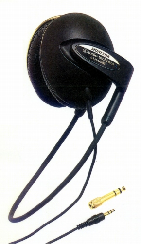

ATH-U8M

■価格 10,000円■型式 密閉ダイナミック型■振動板 40�o16ミクロン厚■インピーダンス 35Ω■再生周波数帯域 5-28,000Hz■許容入力 1,500mW■感度 102ｄB/mW■コード 3.5ｍOFCリッツ線 ステレオミニプラグ/6.3mmアダプター付属■重量 115g（コード含まず）■発売 1992年4月■販売終了 1995〜97年頃■備考 ネオジウム磁石採用
テクニカのインデックスへ